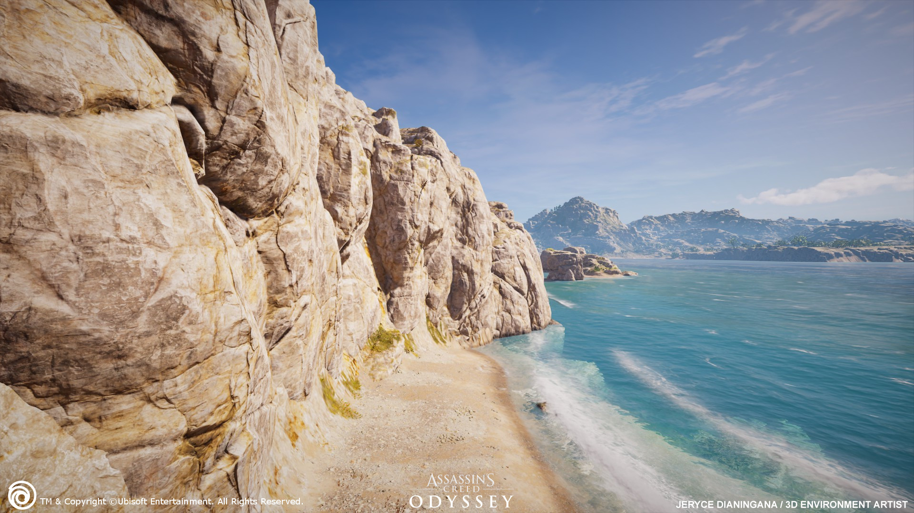
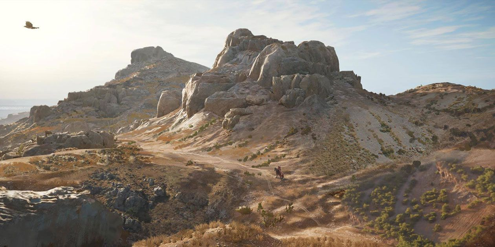

Cliff generation
Ubisoft Mtl / January 2019
Ubisoft
Tools
Professional
Automatically place cliff and rocks on steep terrain areas based on user defined cliff sets. Making sure they don’t trap players but also look nice. This is followed by blending the terrain with the procedural and manual placed rocks for a better transition between terrain and rocks.
- Some constraints were to avoid roads and rivers.
- Follow the sloped area.
- Blend terrain with rocks for smooth transition
- Only rotate along the vertical axis for game play.
 – Terrain blending in to cliffs with stitching. Img By Jeryce Dianingana  – World example of generated cliffs
© 2025 Maurits Laanbroek
•
Theme Moonwalk